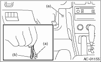
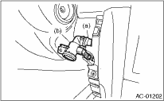
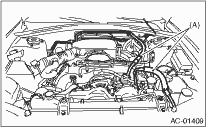

Before performing the diagnosis, check the following items which may cause problems in the A/C system.
1. Measure the battery voltage and specific gravity of the electrolyte.
Standard voltage: 12 V
Specific gravity: 1.260 or more
2. Check the condition of the fuses for A/C system power supply and other fuses.
3. Check the condition of harness and harness connector connections.
1. Turn the ignition switch to ON, and press the A/C switch.
2. Turn the temperature control dial to maximum hot position.
3. Press the defroster switch.
4. Turn the fan speed control dial to 4th position.
5. Put a strip of paper (b) close to the front side of in-vehicle sensor suction port (a) located in the console side panel, and check that air is being sucked into the port by seeing the paper moving towards the port.
NOTE:
Be careful not to let the paper get sucked into the port.

6. If the paper does not move at all, remove the instrument panel lower cover  and check for poor connection of the aspirator hose, in-vehicle sensor and heater unit, and repair them if necessary.
and check for poor connection of the aspirator hose, in-vehicle sensor and heater unit, and repair them if necessary.

Check the connection for A/C line (A) and lower side high-pressure pipe.

1. Check the state of mode door linkage.
2. Check the state of air mix door linkage.
3. Check the state of RESH/RECIRC door linkage.
Start the engine and warm-up completely.
1. Inspection using switches
|
No. |
Point to check |
Switch operation |
Judgment standard |
|
1 |
Mode control dial |
Turn the dial to the right. |
Outlet opening (mode) switches AUTO → VENT → BI-LEVEL → HEAT → DEF/HEAT → DEF each time turning the dial. |
|
2 |
Fan speed control dial |
Turn the dial to the right. |
Fan speed switches OFF → AUTO → 1st → 2nd → 3rd → 4th → 5th → 6th → 7th each time turning the dial. |
|
3 |
FRESH/RECIRC switch |
Press the FRESH/RECIRC switch. |
Inlet opening switches RECIRC → FRESH → RECIRC each time pressing the switch. (LED illuminates at RECIRC) |
|
Press the FRESH/RECIRC switch longer (1 second or more). |
LED blinks twice, and switches to AUTO. | ||
|
4 |
A/C switch |
Turn the A/C switch to ON with the fan speed control dial is set to other than OFF position. |
The LED lights and the compressor operates. |
|
Press the FRESH/RECIRC switch longer (1 second or more). |
The LED blinks twice and the system switches to AUTO. | ||
|
5 |
Auto function Operate in order from 1). |
1) Set the following dial and switch to AUTO. • Mode control dial • Fan speed control dial • FRESH/RECIRC switch • A/C switch 2) Turn the temperature control dial completely to the left, and set to the maximum cool position. |
• Outlet air temperature: COOL • Fan speed: Max. • Outlet opening: VENT • Inlet opening: RECIRC • Compressor: AUTO |
|
3) Turn the temperature control dial to the right slowly up to the maximum warm position. |
• Outlet air temperature: COOL → HOT • Fan speed: AUTO • Outlet opening: AUTO • Inlet opening: AUTO • Compressor: AUTO | ||
|
4) Turn the temperature control dial fully to the right, to the maximum hot position. |
• Outlet air temperature: HOT • Fan speed: Max. • Outlet opening: HEAT • Inlet opening: FRESH • Compressor: AUTO | ||
|
6 |
Defroster Interlock Function |
Set the air flow control dial to the DEF or the DEF/HEAT position. |
• Outlet opening: AUTO • Fan speed: AUTO • Outlet opening: DEF or DEF/HEAT • Inlet opening: FRESH • Compressor: ON |
|
7 |
Rear defogger switch |
Press the rear defogger switch. |
Does the LED illuminate? |
2. Inspection of illumination control
|
No. |
Point to check |
Switch operation |
Judgment standard |
|
1 |
Illumination |
Turn the lighting switch to ON. |
Illumination comes on. If the LED lights, the LED will dim. |